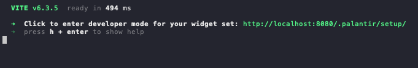
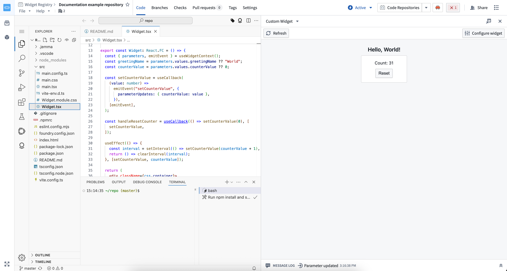
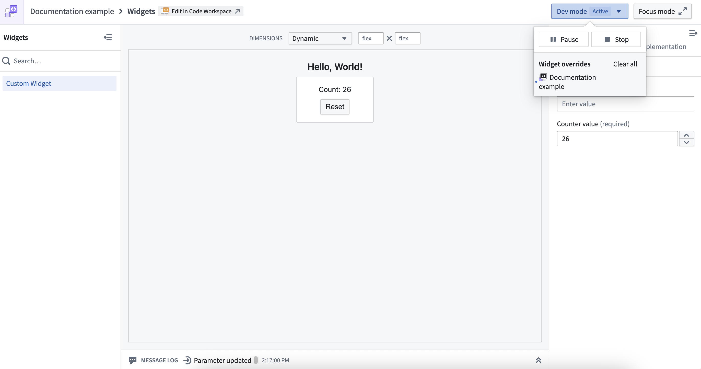
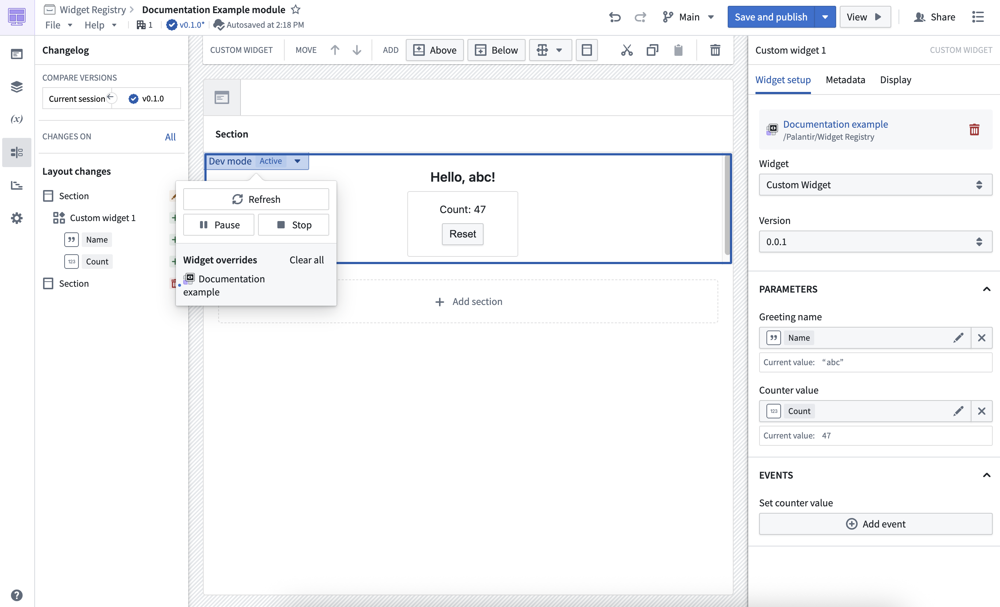

Use dev mode to preview unpublished widget code in Foundry while you develop. Dev mode replaces the published assets for your user account only, so other users continue to see the published version.
This page explains how to start a development server, connect it to your widget set, and confirm that Foundry is displaying your changes.
You need a widget set and its source code. If you have not created one, follow Create a widget set first.
Choose where you want to run the development server:
| Development environment | Setup | Command |
|---|---|---|
| Local machine | Clone the widget set's code repository and create a user-generated token. | npm run dev |
| VS Code Workspaces | Open the widget set's code repository in a workspace. Authentication is managed by Foundry. | npm run dev:remote |
:::callout{theme="neutral" title="Preview a new widget in Workshop"} You can preview an unpublished widget in the custom widgets playground and in Code Workspaces. In Workshop however, you still need to publish it once before being able to select it. After the first publication, dev mode can be used in Workshop similar to the custom widgets playground and Code Workspaces. :::
Clone the widget set's code repository. For a Foundry Code Repository, follow the Work locally instructions in VS Code Workspaces or the Code Repositories application.
Create a user-generated token.
In a terminal, set the FOUNDRY_TOKEN environment variable. Replace <token> with your token.
bash
export FOUNDRY_TOKEN=<token>
bash
npm install
bash
npm run dev
Keep the development server running and open the setup link printed in the terminal. The link connects the server to your widget set and opens the widget set overview page.
Select a widget to open it in the custom widgets playground.
Edit and save a source file. The playground updates with your development version.

If the widget does not update, first confirm that the terminal still shows a running development server and that you opened the most recent setup link.
Open the widget set's code repository in a VS Code workspace.
Wait for the workspace to start. The development server starts automatically for widget set templates.
If the server is not running, start it from the project directory.
bash
npm run dev:remote
In the VS Code preview panel, select the widget that you want to preview.
Edit and save a source file. The preview panel updates with your development version.

The same workspace development server can provide overrides to the custom widgets playground and Workshop. You do not need to run a second server.
Dev mode controls show which version of a widget you are viewing:
| State | Version displayed | What to do |
|---|---|---|
| Disabled | Published version | Start a development session and enable dev mode to preview changes. |
| Enabled | Development version | Continue editing. The control identifies the source as localhost or a VS Code workspace. |
| Enabled (inactive) | Published version | Nothing, if you are not developing the widget you are viewing. Otherwise, confirm that the development server is running and contains the widget, and then reapply dev mode. |
| Paused | Published version | Resume dev mode when you want to return to the development version. |
When dev mode is disabled, the Start dev mode control is displayed. Start your development server before selecting the control so that dev mode can find the widget overrides.
An inactive session means that your development server has no overrides for the widget you are viewing. This state does not always need to be resolved. For example, dev mode reports an inactive session when you open a widget from a different widget set to compare it, or when you view a Workshop application in which you are developing only some of the custom widgets. In these cases, the published version is the version you expect to see.
If you do intend to develop the widget you are viewing, start the development server, confirm that it includes the widget, and then reapply dev mode.

Select Resume to display the development version again. Select Stop to end the dev mode session and continue using the published version.

An active local session identifies localhost as its source:

An active VS Code Workspaces session identifies the workspace as its source:

Dev mode is personal and temporary. It does not change what other users see, and it expires after 24 hours.
After dev mode is active, use the environment that matches what you need to test:
| Preview environment | Use it to |
|---|---|
| Custom widgets playground | Test one widget in different dimensions, change parameter values, and inspect emitted events and parameter updates. |
| Workshop | Test the widget with its Workshop parameter bindings, events, surrounding components, and application layout. |
| VS Code preview panel | Preview a widget without leaving your development workspace. |
The playground displays controls for parameters and a message log for events:

Workshop displays the development version in the application where you use the widget:

Dev mode handles source code and widget configuration changes differently:
| Change | How to preview it |
|---|---|
| Component code or styles | Save the file. The widget updates automatically while the development server is running. |
| Parameters or events in a widget configuration file | Save the file, and then reapply dev mode. For a local server, open the setup link from the terminal again. In VS Code Workspaces, refresh the preview panel. |
Widget templates define parameters and events in a configuration file such as main.config.ts. The following example defines three parameters and two events:
```ts tab="main.config.ts" import { defineConfig } from "@osdk/widget.client";
export default defineConfig({
id: "
Dev mode can preview parameter and event changes with @osdk/widget.vite-plugin version 3.34.0 or later. For supported types and examples of reading parameters and emitting events from a widget, see Parameters and events.
The custom widgets runtime does not support browser APIs that persist data, including:
localStorage and sessionStorage)To share state between widgets, use parameters configured through the host application, such as Workshop variables. To persist state, use saved states for Workshop variables or write data to the Ontology.
By default, Workshop unmounts custom widgets when their containing layout is hidden. This discards state held in the widget's iframe. To preserve local state across navigation, configure widget display optimization to keep the widget mounted.
The custom widgets runtime uses a restrictive content security policy that you cannot configure. The runtime blocks external requests and does not support non-Ontology APIs. To access an external service, use a Foundry resource that wraps the request, such as a function or webhook.
You can use CSS media queries and JavaScript to detect the parent application's color scheme. For implementation details and examples, see Dark theme support.
For help with browser crashes, performance problems, or unexpected behavior while developing custom widgets, see Troubleshooting.